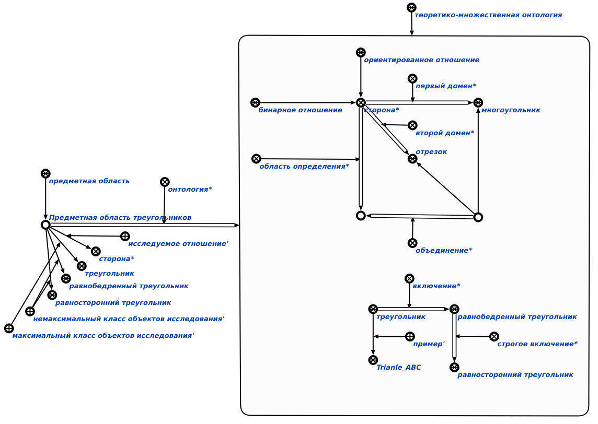

Команда формирования теоретико-множественной онтологии для заданной предметной области предназначена для формирования теоретико-множественной онтологии для заданной предметной области. Единственным входным аргументом команды является предметная область, для которой необходимо сформировать онтологию. Результатом выполнения команды является сформированная теоретико-множественная онтология, связанная с заданной предметной областью связкой отношения онтология*.
Для Предметной области треугольников будет построена следующая теоретико-множественная онтология:
